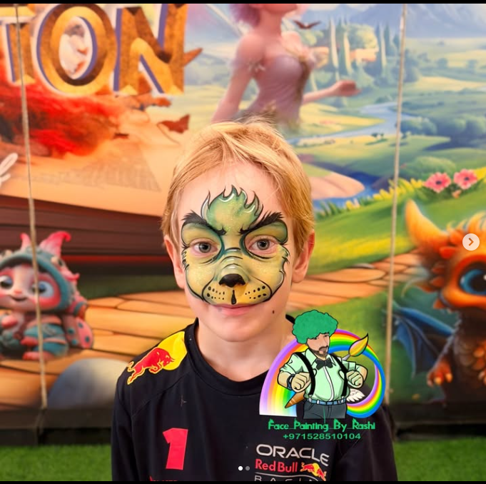
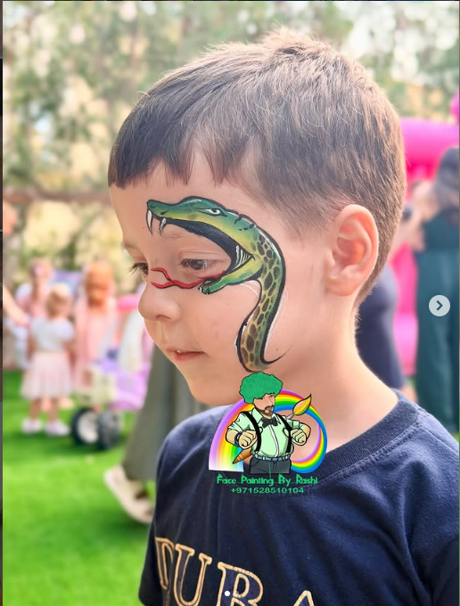
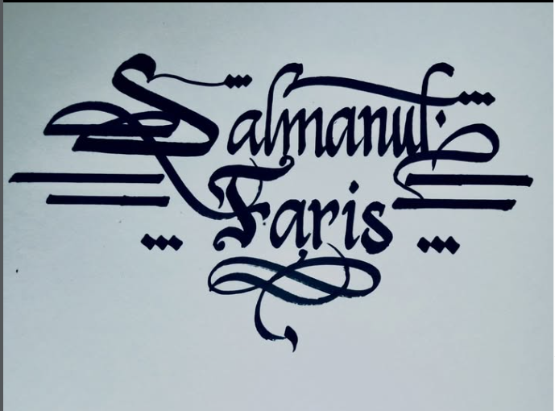

Face Painting by Rashi is a creative and fun service that brings color and imagination to any event.
Rashi is talented at turning simple designs into beautiful artwork on faces, making children and even adults smile with excitement.
Using safe and skin-friendly paints, he creates designs like butterflies, superheroes, animals, and magical patterns and calligraphy.
Face Painting by Rashi is perfect for birthday parties, school events, and celebrations, adding a special touch that makes the occasion more memorable and enjoyable for everyone. 🎨✨


